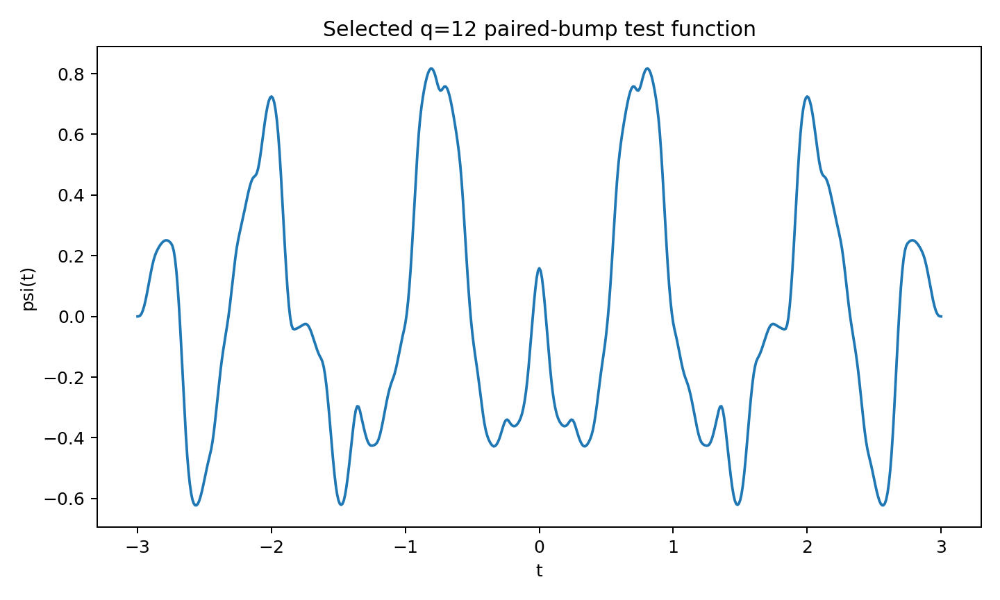

← Semi-Autonomous Research / Engineering Record / Axis Suppression and Full-Window Leakage-Aware Optimizer
Axis Suppression and Full-Window Leakage-Aware Optimizer
Axis-Suppressed Global-Window Optimizer v0.1 — After adding the finite critical line cancellation condition, the arithmetic positive direction dimension rapidly collapsed from 12 to 0; the target rectangle negativity was preserved, but no feasible solution was found for the non-positivization of the full control window.
selected_candidate_summary.json in the package self-reports status="target-negative and arithmetic-positive, but finite control-window nonpositivity failed", reproduced here as-is. This is a finite-dimensional floating-point diagnostic prototype, not an interval certificate, and not a proof of RH.
Connections
The summary of this package explicitly states from the beginning that it is responding to the questions left by the previous package, quoted exactly as is.
"The previous round has already quantified: the negative margin of the existing local negative certificate is far smaller than the positive mass generated by the critical line zeros. Therefore, this round no longer solely maximizes the negativity of a single target rectangle, but establishes a joint optimization prototype that simultaneously features finite critical line sampling elimination, arithmetic quadratic lower bound, target rectangle negativity, and finite off-axis control window exchange limits." — Excerpt from the technical notes summary in this package.
Technical Notes
Loading...
Result Data
Loading...
Trust Boundaries
Loading...
Figures
Three out of five images from outputs/ in the package, reproduced exactly as is, without post-processing.



Files
The complete dense grid data for the control window/target rectangle (selected_control_grid.csv 593 KB, selected_target_grid.csv 731 KB) are not listed individually, but are all included in the complete zip.
Loading...
sha256 496474dedba4d922f33ddf9614e9653f04487ca5ad3c93d186f60818908c4881